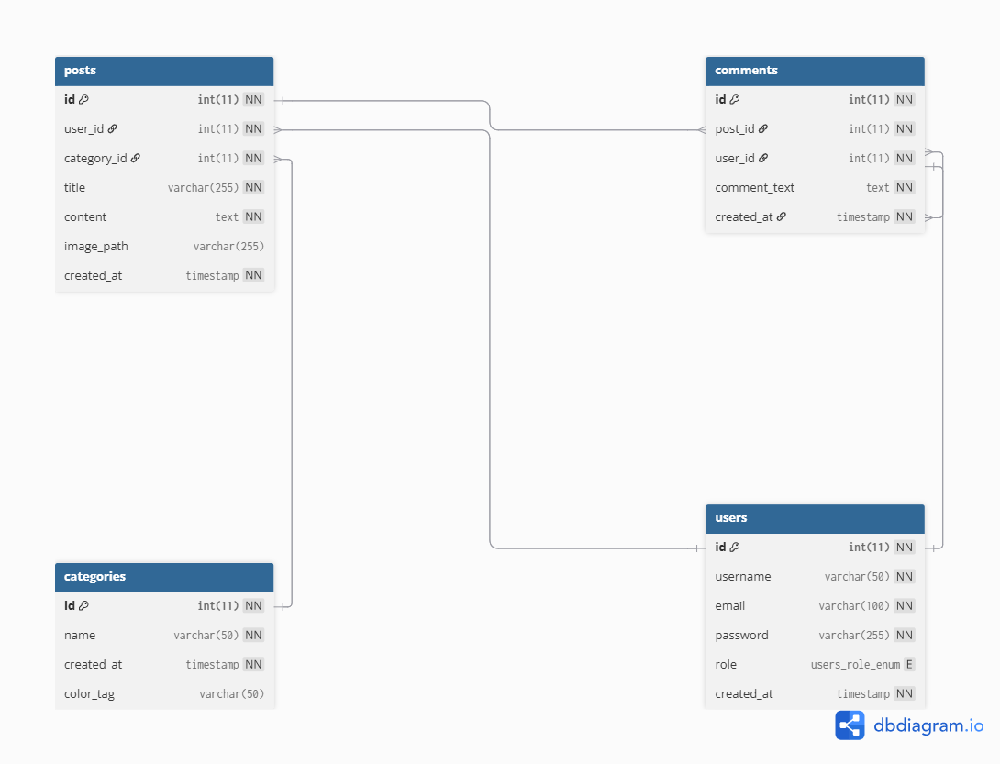

Développement Web Full-Stack
Conception, Architecture et Implémentation
Date : Mai 2026
Nous tenons à exprimer notre profonde gratitude envers toutes les personnes qui ont contribué, de près ou de loin, à la réalisation de ce projet. Leur soutien technique et méthodologique a été essentiel pour concevoir et développer le système 7X Hub Blog.
Le projet "7X Hub Blog" est une plateforme web dynamique développée en utilisant PHP Orienté Objet, PDO et MySQL. Ce rapport détaille la conception, l'architecture et la mise en œuvre du système. Il met en lumière une interface utilisateur moderne avec un design "Glassmorphism" et "Dark Theme", couplée à un backend robuste offrant des fonctionnalités d'authentification sécurisée, de gestion des utilisateurs, et un système complet de gestion de contenu (CRUD) pour les articles, les catégories et les commentaires.
À l'ère numérique, la publication de contenu en ligne nécessite des systèmes à la fois robustes, sécurisés et esthétiquement plaisants. Le projet 7X Hub Blog a été initié pour répondre à ce besoin en proposant une plateforme de blog moderne. L'approche choisie se concentre sur l'utilisation du PHP pur avec une programmation orientée objet, garantissant des performances optimales sans dépendre de frameworks lourds.
Le système 7X Hub Blog est une application web divisée en deux parties principales : une interface publique (Front-Office) pour la lecture et le commentaire d'articles, et un panneau d'administration (Back-Office) sécurisé pour la gestion du contenu. Le design global adopte une identité visuelle "Cyberpunk" et "Glassmorphism", caractérisée par des couleurs sombres avec des accents néons (cyan et violet).
Comment concevoir et développer un système de gestion de contenu (CMS) léger et sécurisé, capable d'offrir une expérience utilisateur haut de gamme (UI/UX) tout en garantissant une structure de code maintenable et une architecture de base de données relationnelle performante ?
password_hash(), prévention des injections SQL via PDO.Le projet adopte une architecture modulaire basée sur des classes (Orientée Objet) pour séparer la logique métier de la logique de présentation :
core/ : Contient les classes principales du système (Database.php, User.php, Admin.php).Admin/ : Héberge les scripts et les interfaces du panneau d'administration (dashboard.php, create_post.php, etc.).includes/ : Regroupe les composants réutilisables de l'interface utilisateur (header.php, footer.php, admin_aside.php).assets/ : Contient les fichiers CSS et les images.La base de données relationnelle nommée x-core gère le stockage de toutes les informations. Elle est structurée pour assurer l'intégrité des données grâce à l'utilisation du moteur InnoDB.

Figure 1 : Diagramme relationnel de la base de données
La base de données comporte plusieurs relations clés définies par des clés étrangères (Foreign Keys) :
posts) appartient à une catégorie (categories) - Relation 1:N.posts) est rédigé par un utilisateur (users) - Relation 1:N.comments) est lié à un article (posts) et à un utilisateur (users) - Relations 1:N avec suppression en cascade (ON DELETE CASCADE).Voici les cinq tables principales extraites du fichier x-core.sql :
| Table | Description |
|---|---|
users | Stocke l'ID, le nom d'utilisateur, l'email, le mot de passe haché, le rôle (admin/user) et la date de création. |
categories | Contient le nom de la catégorie et un champ color_tag pour l'affichage dynamique des couleurs (ex: tag-blue). |
posts | Enregistre les articles du blog avec le titre, le contenu HTML, le chemin de l'image, user_id et category_id. |
comments | Stocke le texte du commentaire, lié à post_id et user_id. |
contact_messages | Stocke les messages soumis via la page de contact (contact.php). |
Le système d'authentification est implémenté dans la classe User.php. Il gère l'inscription et la connexion. Lors de l'inscription, la méthode register() utilise la fonction native de PHP password_hash($password, PASSWORD_DEFAULT) pour chiffrer le mot de passe avant son insertion. Lors de la connexion, la méthode login() récupère les données de l'utilisateur par son email et utilise password_verify() pour vérifier l'exactitude du mot de passe.
Le système fait la distinction entre deux types d'utilisateurs via le champ role de type ENUM('admin', 'user'). Un système de session ($_SESSION['role']) est mis en place. Si un utilisateur ayant le rôle 'user' tente d'accéder au dossier /Admin/, il est redirigé vers la page d'accueil ou de connexion pour des raisons de sécurité.
Le tableau de bord (Admin/dashboard.php) sert de centre de contrôle. La méthode getSystemStats() de la classe Admin.php exécute des requêtes de comptage (COUNT) pour afficher le nombre total d'articles, d'utilisateurs et de commentaires. Le panneau latéral (includes/admin_aside.php) permet la navigation fluide entre la création d'articles, la liste des publications, et la gestion du système.
La gestion des articles est gérée principalement par la classe Admin.php. La récupération des articles se fait via une requête SQL complexe utilisant des LEFT JOIN pour associer l'article au nom de son auteur et à la couleur de sa catégorie (categories.color_tag), ce qui permet d'afficher dynamiquement l'interface utilisateur.
createPost() insère un nouvel article avec une requête préparée.getAllPosts(), getPostById($id), et getLatestFeaturedPost() permettent de lire les données.edit_post.php permet aux administrateurs de mettre à jour le contenu d'un article existant.deletePost($post_id) supprime l'article en se basant sur son ID. Grâce aux clés étrangères, les commentaires liés sont supprimés automatiquement.Le Front-End est construit sans frameworks JavaScript ou CSS (Vanilla HTML/CSS/JS). Les vues publiques (index.php, article.php) utilisent des variables PHP pour injecter dynamiquement le contenu issu de la base de données. Le système importe des polices web personnalisées (Orbitron, Rajdhani, Share Tech Mono) pour accentuer l'esthétique futuriste.
Le Back-End en PHP suit les principes de la programmation orientée objet. L'objet PDO est instancié dans config.php et injecté dans les autres classes (Injection de dépendances). Cela garantit qu'une seule connexion à la base de données est utilisée pendant le cycle de vie de la requête, optimisant ainsi l'utilisation des ressources du serveur.
L'interface utilisateur a été minutieusement travaillée dans le fichier assets/CSS/style.css. L'application utilise des variables CSS (--bg-void, --color-7x-purple, --color-7x-cyan) pour une cohérence chromatique. L'utilisation du "Glassmorphism" (fonds semi-transparents avec filtre de flou backdrop-filter: blur(12px)) donne une impression de profondeur spatiale. Des effets de survol (hover) appliquent des ombres portées lumineuses (glow effects) pour rendre l'expérience interactive.
Le menu principal (header.php) utilise une position fixed avec un arrière-plan flouté. La structure de navigation comprend des liens vers la page d'accueil, les catégories, le panneau d'administration (visible uniquement pour les admins), et les options de compte (Connexion/Déconnexion).
Les sessions sont démarrées en haut de chaque fichier nécessitant une authentification à l'aide de session_start(). La sécurité est assurée par :
bindParam() dans les requêtes PDO.$_SESSION['role'] === 'admin') avant d'autoriser l'accès aux pages de modification.Le système garantit une compatibilité multi-écrans grâce aux règles CSS flexbox et grid, combinées aux requêtes média (@media). Le conteneur principal a une largeur maximale (max-width: 1200px) et s'adapte en pourcentage sur les écrans plus petits, réorganisant le tableau de bord et les grilles d'articles pour un affichage sur une seule colonne si nécessaire.
L'application a été développée et testée sur l'environnement XAMPP sous Windows. La gestion des fichiers est organisée de manière logique dans htdocs/7X_Hub_Blog. phpMyAdmin a été utilisé pour la modélisation de la base de données et l'export du fichier SQL.
Des tests manuels ont été effectués sur plusieurs scénarios : l'inscription d'un nouvel utilisateur, la restriction d'accès aux pages administrateurs pour les utilisateurs standards, la création d'articles avec téléchargement d'images, et l'intégrité référentielle (la suppression d'un utilisateur supprime ses articles et commentaires).
L'architecture choisie a prouvé son efficacité. Le système répond rapidement grâce à l'absence de frameworks lourds. L'interface utilisateur est non seulement fonctionnelle mais se démarque par son identité visuelle unique, ce qui augmente l'engagement des utilisateurs.
Au cours du développement, la gestion des sessions a posé quelques défis, particulièrement concernant la persistance des données entre le back-office et le front-office. De plus, la mise en page des éléments avec "glassmorphism" a nécessité des ajustements CSS minutieux pour s'assurer que les performances de rendu du navigateur ne soient pas impactées.
Le projet 7X Hub Blog démontre la capacité à créer un système de gestion de contenu performant et sécurisé en utilisant les principes fondamentaux de PHP et de la conception web. Il offre une base solide qui peut être facilement étendue pour répondre à des besoins professionnels futurs.
Annexe A : Extrait du fichier de connexion (config.php)
$host = "localhost";
$db_name = "x-core";
$username = "root";
$password = "";
...
$conn = new PDO("mysql:host=" . $host . ";dbname=" . $db_name, $username, $password);